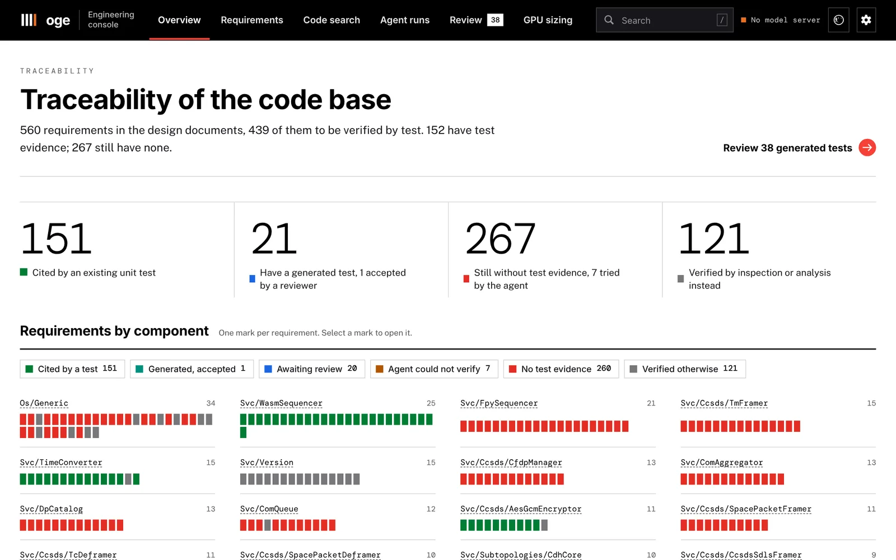
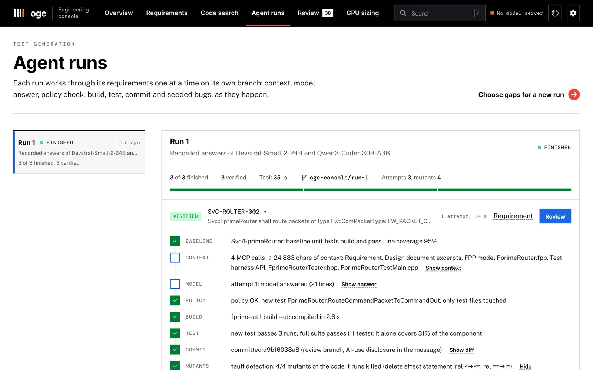
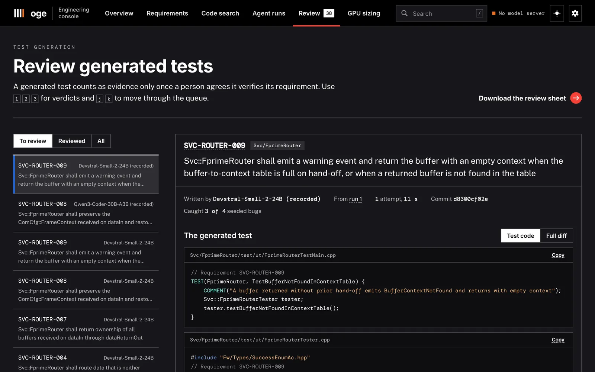

On-premise GenAI platform for flight software
A platform an embedded software team can run on its own GPUs: a knowledge graph of the code and its requirements served over MCP, an agent that writes requirement-tagged unit tests and proves them, a GPU sizing model calibrated on measured runs, and a web console.
- Context
- Personal research project
- Period
- 2026
- Output
- Code, live demo, 6-page paper
- Stack
- Python, LangGraph, MCP, llama.cpp, vLLM, Neo4j, Docker, Jenkins, GitHub Actions


01
The problem
Embedded software teams working on sensitive code often cannot send it to a cloud model. They need assistants that run on their own GPUs, and they need to know three things before buying them: how many GPUs a team needs, whether the models are any good on embedded C, and whether an agent can do useful, checkable work on their code base.
I built and measured such a platform on NASA's F´ flight software framework (v4.4.1), a real code base with design documents, 560 requirements and unit tests that cite requirement IDs. The question I chose for the agent was narrow and verifiable: for a requirement with no test, write one that proves it.
The model only writes test code. Everything else, from context retrieval to the build, the test run, mutation testing and the commit, is deterministic and policy-checked.
02
Architecture
- Knowledge: tree-sitter ingestion of code, unit tests, requirement tables and design documents into a typed graph (1,250 source files, 206,656 lines, 21,681 resolved call edges, including F´'s autocoder conventions), built in about 3 s on a laptop CPU.
- Retrieval: hybrid BM25, dense and graph retrieval served over the Model Context Protocol, so any MCP client can use it.
- Serving: llama.cpp and vLLM profiles in Docker Compose, API keys, ports bound to localhost.
- Sizing: GPU memory (weights, KV cache, linear-attention state) and roofline throughput including mixture-of-experts traffic; every datasheet value carries its source, and unknown values are refused, not guessed.
- Evaluation: 27 purpose-written embedded C tasks scored by execution: strict compile, hidden tests, sanitizers, coverage, mutation testing.
- Engineering: uv, ruff, pyright, pytest with contract tests shared by the in-memory and Neo4j stores, and GitHub Actions running F´, Neo4j, the air-gapped smoke test and Jenkins over MCP.
03
Results
Traceability recovery
No signal alone is enough: the graph knows where to look, because requirements are allocated to components, and the text knows which test. Lexical and dense retrieval fail on different requirements, so fusing them inside the graph's candidate set works best. LLM reranking lowered precision at the top and cost 10 calls per requirement, so it is off by default.
Test-generation agent on 28 requirement gaps
| Model | Verified tests | First answer compiles | Mutants killed (v2) | Median time |
|---|---|---|---|---|
| Qwen3-Coder-30B-A3B | 11 → 18 of 28 | 52% → 81% | 42 / 64 | 43 s |
| Devstral-Small-2-24B | 8 → 18 of 28 | 15% → 67% | 35 / 67 | 94 s |
| Both models together | 21 of 28 | 15 requirements verified by both | ||
Version 1 failed 121 attempts. Classifying them showed that 54% came from one confusion the agent itself reinforced: a did-you-mean hint offered a dispatch method F´ v4 does not have. Version 2 states the component kind and the exact call, fixes a patcher bug and shows the source of failed assertions. Verified tests went from 11 to 18 and from 8 to 18 (exact McNemar p = 0.016 and 0.013).
Serving and sizing on 2× Tesla T4
- Mixture-of-experts models with about 3 B active parameters decode 4 to 6 times faster than dense 24 to 27 B models on these bandwidth-bound GPUs.
- vLLM wins decode and concurrency on the MoE model, but its prefill on Turing is 5 times slower than llama.cpp, which decides 9k-token agent steps.
- One 2× T4 server holds about four concurrent chat users at 20 tokens per second each.
- Calibrated on these runs, the sizing model predicts decode within ±11% for a held-out model and the chat capacity of one server within 7% of the load test.
04
The engineering console
The console puts the platform in front of engineers: a traceability map of the whole code base, the evidence behind each requirement, code search, live agent runs streamed as they happen, a review queue with keyboard verdicts and an export, and the GPU sizing model. It ships as a Docker image with the C++ toolchain and an F´ workspace, and as a read-only demo on GitHub Pages.




05
Limits
- 28 requirement gaps and two models are enough to see a direction, not to rank models finely.
- What still fails is the models' knowledge of the F´ API (invented enum values and include paths) and of component preconditions.
- The GPU numbers come from Kaggle's 2× T4; the sizing model is calibrated there and has to be re-measured on the target GPUs.
- An AI pre-review rated the 36 verified tests as 30 relevant and 6 partially relevant; an engineer still has to confirm them.